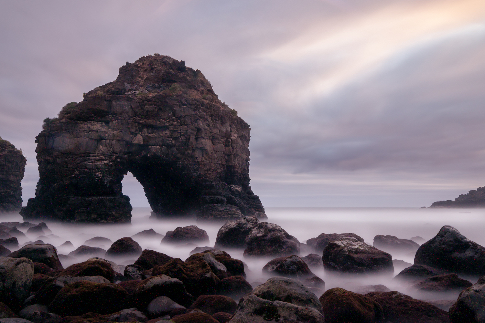

Tenerife
|

Las Palmas
|

|

|

|

|
|---|---|---|---|
Cómo llegar |
Dónde dormir |
Qué comer |
Qué hacer |
La forma más ágil para llegar a Galicia es por avión ya que cuenta con 3 aeropuertos internacionales: el de Lavacolla en Santiago de Compostela, el de Alvedro en A Coruña y el de Peinador en Vigo desde los que va a llegar, fácilmente, a cualquier destino turístico. |
Aquí se encuentran lugares como las ciudades de Vigo y Pontevedra, las populares Islas Cíes y algunas de las mejores playas de la comunidad. |
Galicia es el lugar ideal para relajarse y disfrutar de una rica gastronomía llena de productos típicos de la zona como cigalas, langostinos, vieiras, mejillones, ternera, pulpo a feira... |
Galicia, una comunidad autónoma del noroeste de España, es una región con abundante vegetación y una costa en el Atlántico. La catedral de la capital regional Santiago de Compostela es el supuesto lugar donde se conservan los restos del apóstol Santiago el Mayor, y el destino para aquellos que peregrinan por el Camino de Santiago |
|
|
El Parque Nacional del Teide es el parque nacional más grande de las Islas Canarias.
Esta es una visita obligada para todos los que visitan Tenerife.
Un paisaje único de cráteres, volcanes y ríos de lava petrificada rodea la impresionante
silueta del Teide, que se eleva a 3.718 metros sobre el nivel del mar. El visitante encontrará
numerosos servicios que le permitirán conocer y disfrutar de este espacio: fácil acceso a
través de senderos que recorren todo el parque, dos centros de interpretación que desvelan
algunos de los secretos del parque, una zona de restauración restauradora, numerosos miradores
que permiten crear un panorama completo, una extensa red de senderos para los visitantes que
deseen adentrarse en el parque, e incluso dos alojamientos, el Parador Nacional de Las Cañadas
del Teide y el Refugio de Altavista a 3.270 metros sobre el nivel del mar.
| ||
|
La Cueva del Viento es una cavidad volcánica enclavada en el barrio
de Icod de los Vinos que lleva el mismo nombre. Se formó hace 27.000 años en lavas basálticas
procedentes de la primera fase eruptiva del volcán Pico Viejo, situado junto al Teide.
Este tubo volcánico, cuyo nombre se debe a las importantes corrientes de aire que se producen en su interior, es el quinto más largo del mundo (18 kilómetros topografiados) tras los cuatro primeros que se encuentran en la isla mayor del archipiélago de Hawaii (Estados Unidos). |
| ||
|
|
Las Dunas de Maspalomas es un espacio natural único en las Islas Canarias
por su belleza y la variedad de ecosistemas que alberga. Protegido por el Gobierno de Canarias
como reserva natural especial, sus 400 hectáreas engloban una excelente playa, un campo de dunas
vivas de arena orgánica, un bosque de palmeras y una laguna salobre. Esta mezcla de desierto y oasis
se encuentra en la costa del extremo sur de Gran Canaria y está rodeada de los afamados establecimientos
hoteleros del gran núcleo turístico de Maspalomas.
| ||
|
La playa de Los Roques es una de las más salvajes e impresionantes de la isla,
ubicada en el municipio de Los Realejos, dentro del espacio natural conocido como Paisaje protegido de
la Rambla de Castro. Un sendero que recorre palmerales, nacientes de agua, emplazamientos históricos,
y que empieza (o termina, según se mire) en la playa de Los Roques.
Aunque se encuentra muy próxima a la zona turística de Puerto de la Cruz, la propia playa en sí no es una atracción turística. Se trata de una ensenada aislada y sin servicios, azotada por una fuerte marea que la mantiene al margen del turismo de masas. |

| ||